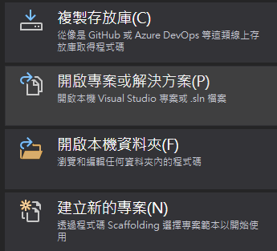
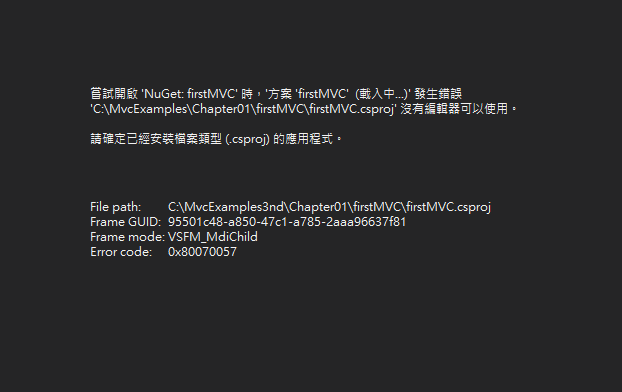
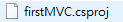
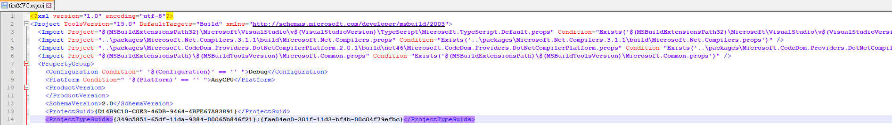
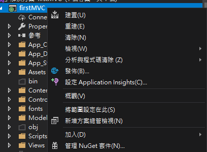
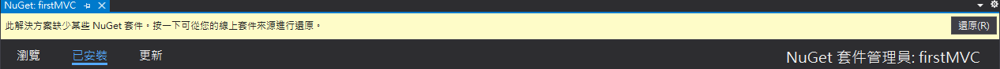
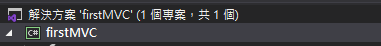
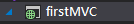

再用 Visual Stuido 2019 去打開別人的 MVC 專案的時候
出現了一點錯誤訊息
紀錄一下解決方法
在使用開啟專案與解決方式方案去開啟
專案名稱.sln 的檔案之後

出現了 csproj 沒有編輯器可以使用的這個錯誤

經過爬文了解到
在專案資料夾下
有一個
專案名.csproj 的檔案

打開他之後
找到標籤名為
ProjectTypeGuids 的那一行
可以看到在分號的前後各有一組號碼
{fae04ec0-301f-11d3-bf4b-00c04f79efbc} 代表的是 C# 專案
{349c5851-65df-11da-9384-00065b846f21} 代表的是 MVC 5 專案

自己目前是知道兩種解法
一種是在專案點選右鍵
然後點選 管理 NuGet 套件

然後按還原就可以正常使用了
但是我是用 Visual Stuido 2019 去試
沒有試過其他版本的

另一種方法
就奇怪了
我們先去編輯副檔名為 csproj 的檔案
然後把 {349c5851-65df-11da-9384-00065b846f21} 這一段跟分號刪掉然後存檔
存檔之後我們打開這一個專案
他會變成 C# 專案

這個時候再把專案關掉
並且把
{349c5851-65df-11da-9384-00065b846f21}; 這一段回復到他原本的位置
再開啟專案，他會回復成網頁的專案，而且竟然就沒有那個錯誤了!
